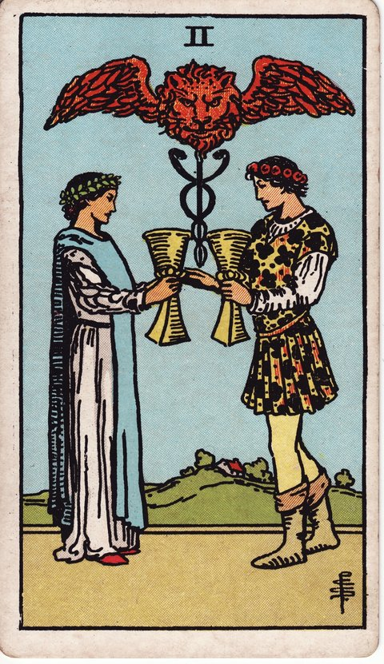

컵 · 타로 카드 백과사전
컵 2

정방향
키워드: 깊어지는 유대 · 파트너십 · 상호 이해 · 맞잡은 손 · 결 맞는 호흡 · 든든한 짝
조언: 서로의 마음을 확인하고 신뢰를 쌓는 대화를 늘려보세요.
연애운
솔로
마음이 통하는 상대를 만나 서로에게 끌리는 시기입니다. 자연스러운 대화 속에서 신뢰를 천천히 쌓아가 보세요.
커플
서로에 대한 이해가 깊어지며 관계가 한 단계 더 가까워지는 시기입니다. 작은 약속이라도 지키며 신뢰를 다져보세요.
재물운
소비
공동 지출이나 함께 쓰는 자금을 합리적으로 조율하는 시기입니다. 상대와 미리 상의하면 불필요한 마찰을 줄일 수 있어요.
투자
믿을 만한 사람과 함께하는 투자가 좋은 결실을 맺는 시기입니다. 역할과 책임을 분명히 나눠두면 더 안정적입니다.
취업운
구직
면접관이나 관계자와 좋은 신뢰를 쌓아 합격 가능성을 높이는 시기입니다. 상대의 입장을 이해하는 태도가 좋은 인상을 남깁니다.
이직
새로운 자리에서 함께 일할 사람들과 빠르게 신뢰를 쌓는 시기입니다. 먼저 마음을 여는 태도가 적응을 도와줍니다.
직장운
팀워크
팀원들과 손발이 척척 맞아 협업이 순조로운 시기입니다. 서로의 역할을 존중하는 태도가 팀워크를 더 단단하게 만듭니다.
개인성과
동료나 상사와의 신뢰 관계가 업무에 든든한 힘이 되는 시기입니다. 필요한 도움을 요청하는 것을 주저하지 마세요.
사업운
창업준비
함께할 사람의 강점과 나의 강점이 잘 맞아떨어지며 사업의 밑그림이 그려지는 시기입니다. 서로 다른 강점을 살릴 수 있는 구조를 고민해보세요.
운영중
거래처나 동업자와의 협력이 안정적인 성과로 이어지는 시기입니다. 정기적인 소통으로 신뢰를 계속 쌓아가세요.
학업운
시험준비
스터디메이트나 선생님과의 좋은 호흡이 학습 효율을 높이는 시기입니다. 함께 문제를 풀어보는 방식이 도움이 됩니다.
진로고민
멘토나 선배와의 대화 속에서 진로에 대한 확신을 얻는 시기입니다. 조언을 구하는 것을 주저하지 마세요.
건강운
신체
함께 운동하거나 건강을 챙겨주는 사람 덕분에 컨디션이 좋아지는 시기입니다. 서로 격려하며 꾸준히 이어가 보세요.
정신
속마음을 나눌 수 있는 사람 덕분에 정서적으로 안정되는 시기입니다. 힘든 일이 있다면 혼자 담아두지 마세요.
대인관계운
새로운 인연
처음 만난 사람과도 자연스럽게 마음이 통하는 시기입니다. 공통의 관심사를 나누며 거리를 좁혀보세요.
기존 관계
오래된 인연과의 신뢰가 한층 더 단단해지는 시기입니다. 서로의 노력을 당연하게 여기지 말고 표현해보세요.
명예운
주변과의 좋은 관계 속에서 신뢰받는 사람으로 인정받는 시기입니다. 함께 쌓아온 신뢰가 평판의 든든한 바탕이 됩니다.
이사운
함께할 사람과 마음이 맞아 이동이 순조롭게 진행되는 시기입니다. 서로 상의하며 결정하면 더 좋은 선택이 됩니다.
자식운
아이와 마음이 잘 통하며 서로를 이해하는 대화가 늘어나는 시기입니다. 아이의 눈높이에서 귀 기울여보세요.
역방향
키워드: 관계 불균형 · 소통 단절 · 일방적 관계 · 삐걱이는 저울 · 겉도는 대화 · 벌어진 간격
조언: 일방적으로 참기보다 서로의 입장을 솔직하게 확인해보세요.
연애운
솔로
호감은 있지만 마음이 어긋나 오해가 쌓일 수 있는 시기입니다. 짐작으로 판단하지 말고 직접 물어보는 것이 좋습니다.
커플
사소한 일로 균형이 깨지며 소통이 줄어들 수 있는 시기입니다. 먼저 다가가 대화를 시도해보세요.
재물운
소비
공동 지출을 둘러싼 의견 차이로 갈등이 생길 수 있는 시기입니다. 지출 기준을 미리 정해 오해를 줄여보세요.
투자
동업 투자에서 신뢰가 흔들리며 손해를 볼 수 있는 시기입니다. 계약이나 조건을 서면으로 다시 점검해보세요.
취업운
구직
면접 과정에서 소통이 어긋나 좋은 인상을 남기지 못할 수 있는 시기입니다. 준비한 내용을 명확하게 전달하는 데 집중하세요.
이직
새로운 팀과 손발이 맞지 않아 시행착오를 겪을 수 있는 시기입니다. 조급해하지 말고 서로 적응할 시간을 가지세요.
직장운
팀워크
팀 내 역할 분담이 어긋나며 협업에 혼선이 생길 수 있는 시기입니다. 업무 범위를 다시 한번 명확히 정리해보세요.
개인성과
동료와의 사소한 오해가 불편한 관계로 이어질 수 있는 시기입니다. 감정이 더 쌓이기 전에 대화로 풀어보세요.
사업운
창업준비
동업자와 방향성이 어긋나 초기 계획에 차질이 생길 수 있는 시기입니다. 계약 조건을 다시 한번 명확히 짚어보세요.
운영중
거래처와의 불신으로 협력에 균열이 생길 수 있는 시기입니다. 문제를 미루지 말고 빠르게 대화로 풀어보세요.
학업운
시험준비
스터디 그룹 내 의견 차이로 학습 흐름이 흐트러질 수 있는 시기입니다. 혼자 정리하는 시간도 함께 가져보세요.
진로고민
조언을 구한 사람과 생각이 달라 혼란스러울 수 있는 시기입니다. 여러 의견을 참고하되 결정은 스스로 내려보세요.
건강운
신체
함께 하던 운동이나 습관이 어긋나며 흐지부지될 수 있는 시기입니다. 계획을 다시 세워 혼자서라도 이어가 보세요.
정신
가까운 사람과의 소통 부재로 마음이 답답해질 수 있는 시기입니다. 신뢰할 수 있는 사람에게 먼저 마음을 열어보세요.
대인관계운
새로운 인연
낯을 가리거나 소극적인 태도로 관계가 겉돌 수 있는 시기입니다. 작은 공통점부터 찾아 대화를 시작해보세요.
기존 관계
오랜 친구나 지인과 서운함이 쌓이며 거리가 생길 수 있는 시기입니다. 묵혀둔 감정을 풀 수 있는 자리를 마련해보세요.
명예운
신뢰가 깨지며 평판에 금이 갈 수 있는 시기입니다. 오해를 방치하지 말고 먼저 나서서 풀어보세요.
이사운
이동을 둘러싸고 의견이 엇갈려 계획이 늦어질 수 있는 시기입니다. 우선순위를 정해 하나씩 조율해보세요.
자식운
아이와 뜻이 어긋나며 다투는 일이 잦아질 수 있는 시기입니다. 일방적으로 지시하기보다 대화로 접점을 찾아보세요.
같은 슈트: 컵 에이스 · 컵 2 · 컵 3 · 컵 4 · 컵 5 · 컵 6 · 컵 7 · 컵 8 · 컵 9 · 컵 10 · 컵 시종 · 컵 기사 · 컵 퀸 · 컵 킹
홈에서 직접 카드 뽑아보기 ↗